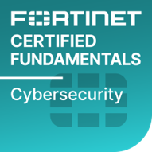
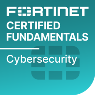

Cursos
de Tecnologia
Olá! Sou o Professor William Silva, formado em Tecnologia em Redes de Computadores pela Faculdade Eniac. Atualmente, estou cursando MBA em Cybersecurity e Cybercrimes na Faculdade Anhanguera de São Paulo.
Com uma experiência sólida de 20 anos na área de Tecnologia da Informação, desempenhei diversas funções ao longo desse período, atuando como Analista de Suporte, Infra Estrutura, Coordenador de Equipe de TI e na Gestão do Conhecimento.
Desde 2022, venho compartilhando meu conhecimento como Instrutor de Tecnologia. Atualmente, faço parte do corpo docente do SENAI (Serviço Nacional de Aprendizagem Industrial) na cidade de Guarulhos, SP.
Minhas disciplinas abrangem uma variedade de cursos, incluindo Informática Básica, Excel, Montagem e Manutenção de Micros, Pacote Office, Power BI, SC – 900 e Princípios de Segurança da Informação – Cibersegurança, além de Redes de Computadores.
Estou comprometido em fornecer uma educação de qualidade e prática, contribuindo para o desenvolvimento de habilidades essenciais nas área de Tecnologias.


 
